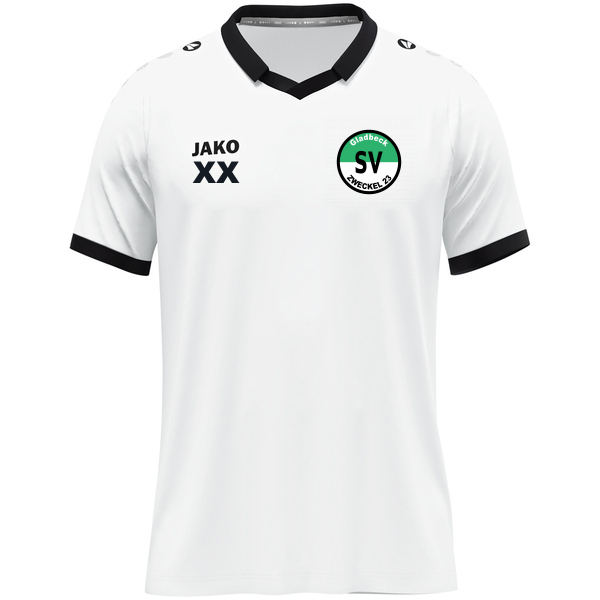
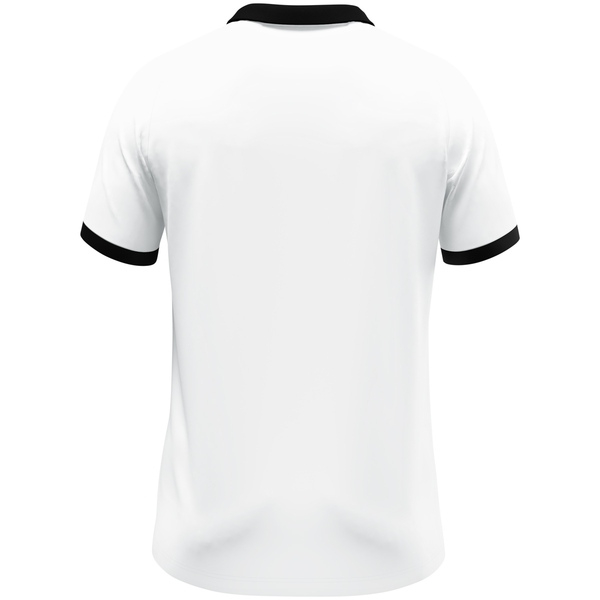
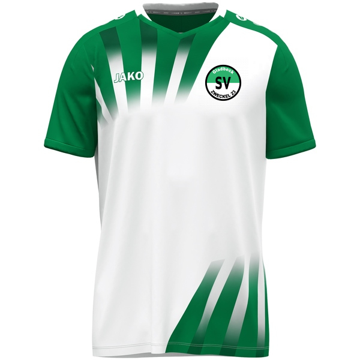
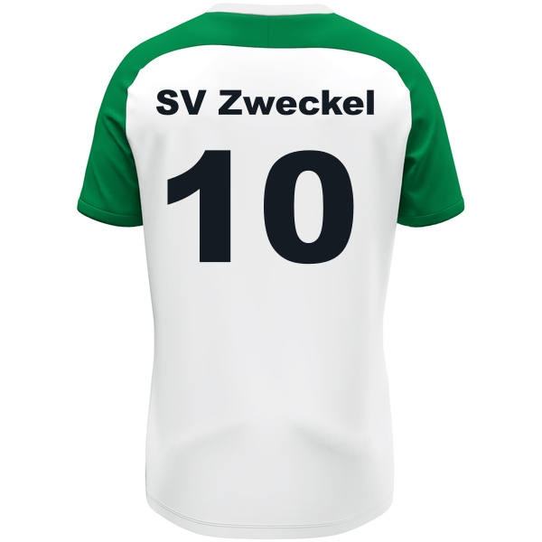
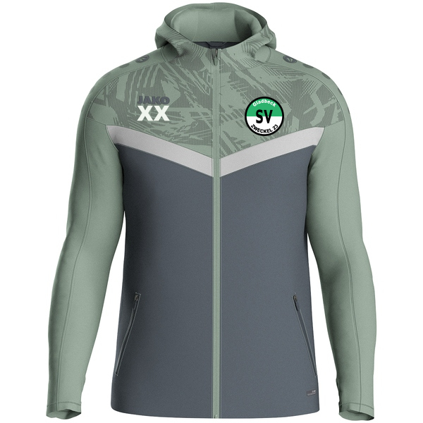
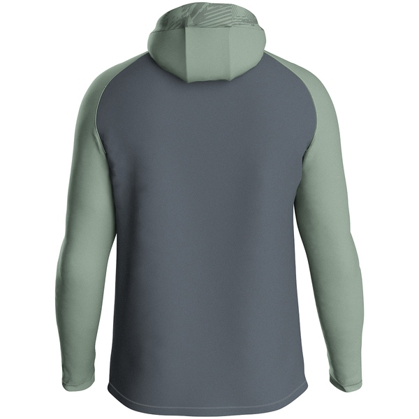

Naechstes Spiel
1. Mannschaft
Sonntag, 19. April 2026
Uli-Simon-Arena, Gladbeck
Schwarz. Gruen. Gladbeck.
Eine moderne Vereinswebsite mit starkem Spieltagsfokus, klaren Einstiegen fuer Fans, Spieler, Eltern und Sponsoren und einer Struktur, die sich spaeter sauber in ein CMS ueberfuehren laesst.
Startseite
Die Startseite fuehrt auf einen Blick in Spieltag, News, Mannschaften, Jugend und Vereinsleben. Genau diese Hierarchie macht die Seite spaeter fuer Redaktion und Nutzer pflegeleicht.
Matchcenter
Naechstes Spiel
Sonntag, 19. April 2026
Uli-Simon-Arena, Gladbeck
Letztes Ergebnis
Starker Heimauftritt mit klarer Storyline fuer die Startseite.
Direktzugriff
Platzhalter fuer FUSSBALL.DE- oder Vereinsdaten-Anbindung.
Aktuelles
Die Startseite zeigt nur die wichtigsten Meldungen. Das volle Archiv liegt auf der eigenstaendigen News-Seite.
Alle News ansehenMannschaften
Jede Mannschaft sollte spaeter eine konsistente Landingpage mit Ansprechpartnern, Trainingszeiten, Tabelle, Spielplan und News erhalten. Die folgenden Karten zeigen das Inhaltsmodell dafuer.
Jugend im Fokus
Die Jugend braucht auf der neuen Seite mehr als ein Untermenue: ein klares Jugendportal mit Ansprechpartnern, Trainingszeiten, News, Jugendkonzept und einem offensiven Probetraining-CTA.
Verein
Der Verein hat starke Substanz: Historie, Vorstand, Vereinslied, Mitgliedschaft und 100 Jahre Vereinsgeschichte. Diese Inhalte bekommen hier eine moderne, besser lesbare Buehne.
Historie
Ansprechpartner
Mitgliedschaft
Auf der alten Seite sind Antraege und Hinweise vorhanden, aber nicht offensiv genug praesentiert. Die neue Website setzt hier auf klare Umwandlungspfade fuer Mitgliedschaft, Probetraining und Sponsoring.
Formulare, Beitraege und Datenschutz-Hinweise werden in einem strukturierten Downloadbereich gebuendelt.
Mitgliedschaft anfragenEine eigene Sponsorenseite mit Leistungen, Reichweite und Ansprechpartnern ist technisch bereits mitgedacht.
Sponsoring besprechenKontakt
Dorstener Strasse 43
45966 Gladbeck
Telefon: 0 20 43 / 5 17 43
E-Mail: info@svzweckel.de
Vereinskanaele
Instagram, TikTok und WhatsApp ergaenzen die Website als schnelle Vereinskanaele fuer Fans, Spieler und Eltern.
JAKO Shop Preview
Als JAKO-Partner kann der Verein kuenftig Trikots, Hoodies und Teamwear direkt sichtbar anteasern, bevor ein echter Shop oder Bestellprozess angebunden wird.

Matchday
Frontansicht fuer den kuenftigen Heimspiel-Look in der Shop-Preview.

Rueckseite
Rueckennummern, Namen und Sponsorenflaechen spaeter integrierbar.

Retro Drop
Ideal fuer Sonderaktionen, Jubilaeum oder limitierte Fanserie.

Retro Back
Kombiniert nostalgische Optik mit einer modernen Produktdarstellung.

Teamwear
Funktioniert fuer Staff, Jugend und Fans als alltagstauglicher Club-Look.

Rueckenansicht
Perfekt fuer spaetere Namensveredelung, Initialen oder Teambranding.
Ausruester und Partner
Der SV Zweckel wird von JAKO ausgestattet. Deshalb bekommt der Footerbereich eine eigene Sponsorenzone, die Ausruester, Teamwear und kuenftige Partnerflaechen sichtbar vorbereitet.
Teamwear, Trikots und Merch als visibler Bestandteil des Vereinsauftritts.
Sponsoring anfragen